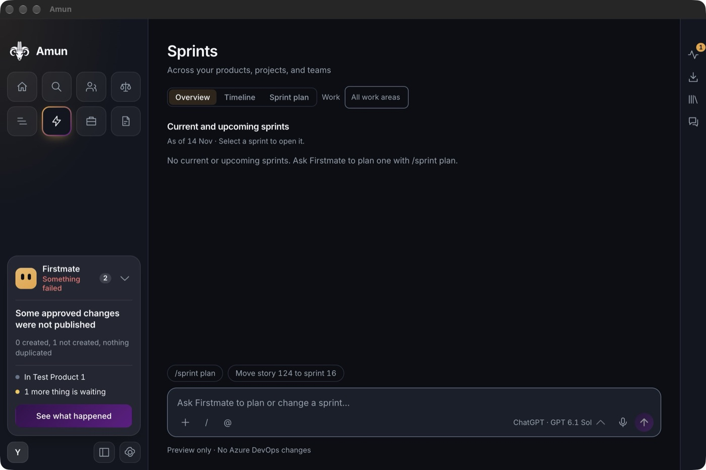

You type “Create a new Project called …” anywhere; Amun files the folder in about 3 seconds and asks before making a twin, now including singular/plural twins.
2 · Discovery
Unchanged flow. Fixed today: “Ask Firstmate to unblock it” goes to the chat of the request the crewmate is working on, found by its request reference (else General), and says where it goes.

3 · PRD / BRD lands in Amun
Products already file the crew’s PRD (PR #60). A project now switches from its checklist (Firstmate asks once; its tasks become stories), and then files a BRD the same way. Mira’s missing PRD still needs the crew to report it with its request reference.

4 · Approve this version?
Approval binds to the exact version (proven on Badge Desk). Projects use the same approval after they switch. Delivered (step 15) now only counts this approved version.
5 · Stories: Drafted or Published
Each story shows Where: Drafted (Amun only) or Published (in Jira, Linear or Azure DevOps, with its key), and its Status. Epics show “n of m done”. Opened by asking (“show the stories”), from a Sprint tile, the Portfolio card or an Activity row.

| Story | Where | Status | Sprint |
|---|---|---|---|
| Customers & contacts 2 of 4 | |||
| Add a customer | Published · TRA-101 | Done | Sprint 1 |
| Merge duplicates | Drafted | — | — |
6 · Groom the backlog
Azure DevOps grooming is proven (list/board, staging, one Apply). For Jira, Linear and stories kept in Amun, grooming happens on the approved Stories screen once it is built.
7 · Plan the sprint
The planner is proven for Azure DevOps. Next: a sprint kept in Amun that holds stories, so projects with no tool can run sprints, and the approved tile links (Stories · Receipt · Release · Roadmap · Sprint chat).

8 · Approve the plan and publish
The Invoiced Linear plan was dropped because it arrived in a reply nobody asked for. Now it is raised once, in the chat of its request, through the same checks. A corrected plan is raised again for review.
9 · Receipt in the chat
One receipt per approved plan, in the chat that asked, updated in place; partial results say so and only the failed items can be retried. The request line reads “Ready · View receipt”.
| Customers & contacts | P-TRA-3 ↗ | — |
| Add a customer | TRA-101 ↗ | P-TRA-3 |
10 · Watch stories move
Proven for Azure DevOps. The approved “Where these came from” line links the BRD version, the receipt that created the stories and the release they ship in.
11 · Mark stories Done
Stories kept in Amun can be set To do · In progress · In review · Done · Removed. Stories in a tool change there, through an approved plan, and are read back.
To do
In progress
In review
Done
12 · Epics close
Epic progress counts every story except Removed; the epic is Done when all are Done. The same numbers feed the Portfolio card and the Roadmap.
13 · Ready to release?

14 · Close out?
Close-out only runs for a release that is truly Verified live. Stories kept in Amun turn Done. Stories in Jira or Linear are listed. Closing them there needs the tracker connection to edit existing items, which it can’t do yet; it only creates new ones. This is the last real gap.
15 · Mark the PRD / BRD Delivered?
Only when the current version is approved, its epics are Done (or moved to a later version), and a release that ships those stories is Verified live. This answers “how do I make Draft into Done”.
16 · Roadmap, Portfolio and Activity show it
Now
Next
Later
Done
Every link of the chain now exists in Amun’s store, and every screen has an approved design. What remains is building those screens, plus letting Jira and Linear close existing items (step 14).
Next, in order
- Merge #68 and #69, rebuild the app, and re-run the Invoiced Linear publish on your Mac: plan card → approve → receipt → Ready.
- Build the approved screens: the same tabs on Products and Projects, the Stories screen (Drafted / Published), sprint kept in Amun with status chips, and the four ways in (chat, Sprints, Portfolio card, Activity).
- Release readiness gate, close-out and Delivered cards, Roadmap progress and Done column.
- Tracker edits for existing items (Jira and Linear transitions), so close-out can finish in the tool.
- One full run on the Mac: Badge Desk (Jira) and Gitex Demo (Amun only) from approved requirements to Delivered on the Roadmap.